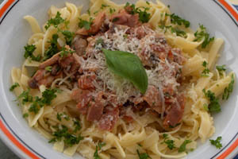

Tagliatelle alla paesana
Ingrediënten (voor 4 à 6 personen)
- 250 g champignons
- 4 middelgrote tomaten
- 100 g prosciutto
- 150 g koud maar gebraden varkensvlees
- 1 teen knoflook
- peterselie
- een bosje basilicum
- zout
- peper
- olie
- parmezaanse kaas
- 350 - 450 g tagliatelle
Bereiding
- Maak de champignons schoon en snijd ze in dunne plakjes.
- Bak de champignons zachtjes in een koekenpan met wat olie.
- Doe er de prosciutto (in stukjes), een fijngehakte teen knoflook en de ontvelde tomaat (in stukjes) bij.
- Bak ze 5 minuten mee en voeg het gare varkensvlees (in dunne plakjes), de kruiden, zout en peper toe.
- Roer deze saus door de gare en uitgelekte pasta in een diepe, voorverwarmde schaal.
- Roer er 2 eetlepels geraspte parmezaanse kaas door en geef er meer kaas apart bij.